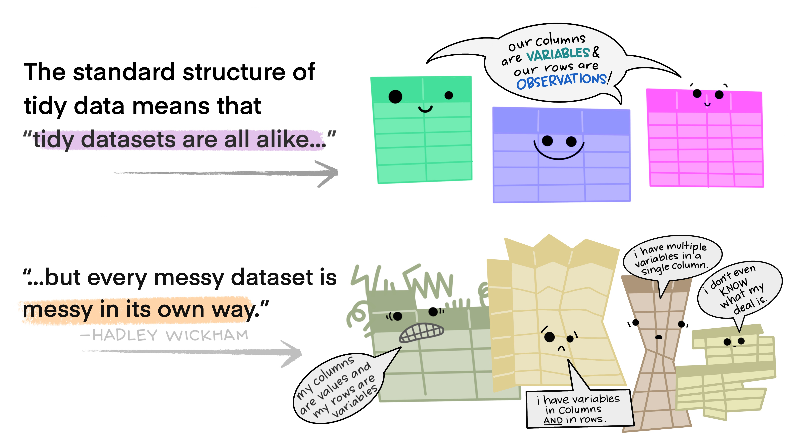
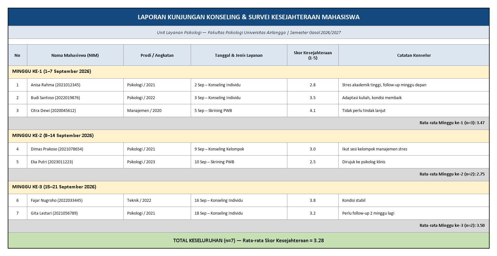

Bekerja dengan Data Tabular
Literasi Data dan Penulisan Ilmiah
2026-08-14
Outline
- Anatomi tabel dan dasar-dasar spreadsheet
- Unit analisis dan prinsip tidy data (Wickham, 2014)
- Bentuk panjang (long) vs. lebar (wide)
- Studi kasus: menata dataset Big Five Personality Test
- Menyusun tabel ringkasan: distribusi frekuensi dan tabel kontingensi
- Menyajikan tabel dengan baik
- 2️⃣ aktivitas (mandiri & kelompok)
Anatomi Tabel & Dasar Spreadsheet 📊
Mengenal tabel
- Hampir semua pekerjaan literasi data — dari data mentah sampai naskah publikasi — menggunakan sebuah tabel untuk menyajikan data.
- Minggu lalu kita bicara tentang Data Pipeline secara konsep. Hari ini kita mulai get your hands dirty: bagaimana tabel disusun, dibaca, dan diubah bentuknya.
- Ingat definisi minggu lalu: data adalah representasi dunia yang terstruktur. Tabel adalah salah satu bentuk struktur itu yang paling umum kita temui.
Anatomi sebuah tabel
- Baris (row) — mewakili satu record, biasanya berisi informasi tentang satu unit analisis (mis. satu partisipan).
- Kolom (column) — mewakili satu variabel, misalnya usia, gender, atau skor pada satu item skala.
- Sel (cell) — pertemuan satu baris dan satu kolom, diidentifikasi lewat sistem referensi (kolom → huruf, baris → angka): sel
B3berarti kolom B, baris 3.
Baris itu granular
Baris idealnya mewakili informasi paling rendah levelnya dan paling detail. Jadi, bukan ringkasan atau subtotal.
Fungsi dan formula dasar
Formula selalu diawali tanda =:
=B3+B8— menjumlahkan dua sel=SUM(B3:B8)— menjumlahkan rentang sel (tanda:berarti “sampai dengan”)=AVERAGE(B3:B8)— rata-rata satu rentang=COUNT(B3:B8)— menghitung berapa sel berisi angka
Fungsi adalah kalkulasi siap pakai bawaan spreadsheet — lebih ringkas daripada menulis =B3+B4+B5+B6+B7+B8 manual.
Kenapa ini relevan?
Skor total skala kepribadian yang akan kita pakai hari ini (mis. skor Extraversion) pada dasarnya adalah =AVERAGE() dari 10 item — satu formula yang sama akan Anda pakai berkali-kali sepanjang semester ini.
Unit Analisis dan Prinsip Tidy Data 🧹
Tabel yang dirancang untuk dibaca manusia…
…seringkali bukan tabel yang siap dianalisis komputer. Perhatikan dua tabel berikut, keduanya tentang hasil panen buah:
Tabel A — per hari
| Hari | Jeruk | Apel | Buah Naga |
|---|---|---|---|
| Senin | 10 | 12 | 15 |
| Selasa | 15 | 14 | 16 |
| Rabu | 15 | 11 | 19 |
Tabel B — per bulan
| Bulan | Jeruk | Apel | Buah Naga |
|---|---|---|---|
| Januari | 453 | 637 | 234 |
| Februari | 456 | 674 | 245 |
Apa bedanya? Bukan variabelnya (sama-sama jeruk, apel, buah naga) — tapi unit analisisnya: Tabel A per hari, Tabel B per bulan.
Unit analisis harus jelas dan konsisten
Setiap baris harus mewakili satu unit analisis yang benar-benar unik. Dua tips penting:
- Beri nomor unik (unique identifier) pada tiap baris. Kalau tabel hanya berisi nama hari, bagaimana Anda membedakan hasil panen hari Selasa minggu ini dengan minggu depan?
- Urutkan data dengan aturan yang konsisten dan sesuai konteks — misalnya berdasarkan ID, tanggal, atau besaran nilai — bukan asal-asalan.
Penting diingat
Dalam riset psikologi, unique identifier ini biasanya adalah ID partisipan — bukan nama, demi menjaga anonimitas sekaligus memudahkan pelacakan data longitudinal.
Mana yang lebih tepat?
Diurutkan berdasarkan ID
| ID | Hari | Jumlah |
|---|---|---|
| 001 | Senin | 37 |
| 002 | Selasa | 49 |
| 003 | Rabu | 45 |
Diurutkan berdasarkan nilai
| ID | Hari | Jumlah |
|---|---|---|
| 001 | Senin | 37 |
| 003 | Rabu | 45 |
| 002 | Selasa | 49 |
Tidak ada jawaban universal, ini sangat tergantung tujuan Anda. Apakah Anda ingin melacak entri berdasarkan urutan pengumpulan? Maka, urutkan berdasarkan ID. Kalau ingin cepat melihat nilai ekstrem? Maka, urutkan berdasarkan nilai.
Prinsip tidy data
Wickham (2014) — tiga aturan tidy data
- Satu kolom memuat satu variabel.
- Satu baris mewakili satu unit analisis (case).
- Satu tabel mewakili satu observational unit.
Dengan tidy data:
- Lebih mudah membuat visualisasi
- Memudahkan eksplorasi dan pemfilteran data
- Lebih mudah “dibersihkan” (Pertemuan 4)
- Tidak berantakan ketika Anda perlu melakukan koreksi atau penyesuaian
Tidy data

Tidy data

Bentuk Panjang vs. Lebar 🔄
Long vs. wide format
Long form (panjang)
- Tiap variabel mendapat kolom sendiri — paling sesuai prinsip tidy.
Wide form (lebar)
- Tiap baris berisi seluruh hasil observasi dari satu unit analisis, biasanya untuk pengukuran berulang.
- Cocok untuk melihat tren dari waktu ke waktu (data longitudinal/time series).
Contoh: long form
| Nama | Waktu | Jumlah Makanan (gr) |
|---|---|---|
| Kucing A | Senin | 100 |
| Kucing A | Selasa | 120 |
| Kucing B | Senin | 123 |
| Kucing B | Selasa | 125 |
Satu baris = satu observasi (satu kucing, pada satu waktu tertentu).
Contoh: wide form
| Nama | Senin | Selasa |
|---|---|---|
| Kucing A | 100 gr | 120 gr |
| Kucing B | 123 gr | 125 gr |
Sama-sama data yang valid — tapi bentuk wide di sini melanggar aturan tidy nomor 1 (kolom “Senin” dan “Selasa” sebenarnya sama-sama variabel “jumlah makanan”, cuma dipisah berdasarkan waktu).
Bukan berarti wide selalu salah
Wide format tetap berguna untuk presentasi (mis. tabel ringkasan di naskah publikasi). Yang penting: gunakan long format untuk analisis, dan konversi ke wide kalau perlu untuk penyajian (Pertemuan 7).
Studi Kasus: Dataset Big Five Personality Test 🧬
Menerapkan prinsip tadi ke dataset kita
Ingat dari Pertemuan 1 — dataset dari Open-Source Psychometrics Project yang akan kita pakai sampai Pertemuan 7. Strukturnya:
- Tiap baris = satu partisipan (unit analisis) yang mengisi survei daring.
- Tiap kolom = satu variabel: 50 kolom item kepribadian (
E1–E10,N1–N10,A1–A10,C1–C10,O1–O10), plus kolom demografis (age,gender,country, dst.). - Setiap sel berisi satu nilai: respons 1–5 pada skala Likert, atau satu nilai demografis.
Apakah struktur ini tidy? Ya — satu variabel per kolom, satu partisipan per baris, satu tabel untuk satu jenis observasi (respons survei).
Tapi “tidy” ≠ “siap pakai”
Dataset ini tidy secara struktur, tapi untuk dianalisis sebagai skor kepribadian, kita masih perlu mengubahnya:
| Sebelum (level item) | Sesudah (level skala) |
|---|---|
E1, E2, E3, ..., E10 (10 kolom) |
skor_extraversion (1 kolom) |
N1, N2, N3, ..., N10 (10 kolom) |
skor_neuroticism (1 kolom) |
skor_extraversion = AVERAGE(E1:E10) — inilah kenapa formula AVERAGE() yang kita bahas di awal tadi sangat penting. (Beberapa item butuh dibalik skornya dulu/reverse-scored — kita bahas saat membersihkan data di Pertemuan 4.)
Dari tabel “dibaca manusia” ke tabel “siap dianalisis”
Bandingkan dua cara menyajikan ringkasan skor kepribadian yang sama:
Untuk dibaca manusia (laporan)
| Trait | Skor Rata-rata |
|---|---|
| Extraversion | 3.4 |
| Neuroticism | 2.9 |
| Openness | 3.8 |
Siap dianalisis (dataset)
| ID | Trait | Skor |
|---|---|---|
| 001 | Extraversion | 3.1 |
| 001 | Neuroticism | 2.7 |
| 001 | Openness | 4.0 |
Penting diingat
Tabel kiri cocok untuk satu slide laporan (ringkasan seluruh sampel). Tabel kanan menyimpan skor per partisipan, per trait — inilah bentuk yang bisa difilter, dibandingkan antar kelompok, dan divisualisasikan.
🧩 Aktivitas kelompok: menata ulang tabel
Kerjakan berkelompok (15 menit)
Kelompok Anda diberi tabel “Laporan Kunjungan Konseling & Survei Kesejahteraan Mahasiswa” disusun untuk dibaca manusia, bukan untuk dianalisis:

Diskusikan
Yang harus didiskusikan
- Identifikasi kategori data apa saja yang ada dalam tabel tersebut (mis. ID, minggu, prodi/angkatan, jenis layanan, skor).
- Sepakati kolom header apa yang dibutuhkan agar tabel ini memenuhi tiga aturan tidy data — termasuk kolom mana yang sebenarnya harus dipecah jadi dua.
- Gambarkan (di ppt/Canva/dst.) versi tidy dari tabel tersebut.
- Diskusikan: informasi apa yang “hilang” saat direstrukturisasi, dan bagaimana cara memunculkannya kembali dengan formula?
Menyusun Tabel Ringkasan 📋
Tabel distribusi frekuensi
- Memuat frekuensi (jumlah kemunculan) dari tiap nilai suatu variabel.
- Cocok untuk satu variabel (univariat) — misalnya, berapa banyak partisipan pada tiap kategori usia.
- Memudahkan Anda memvisualisasikan data sebagai bar chart, histogram, dsb. (Pertemuan 7).
| Kategori Usia | Frekuensi (n) | Persentase |
|---|---|---|
| 18–22 tahun | 142 | 35.5% |
| 23–27 tahun | 168 | 42.0% |
| 28+ tahun | 90 | 22.5% |
Angka bersifat hipotetis untuk ilustrasi.
Tabel kontingensi (cross tabulation)
- Tabel distribusi frekuensi cocok untuk satu variabel — tapi peneliti sering berurusan dengan dua atau lebih variabel sekaligus.
- Untuk kasus dua variabel (bivariat), tabel kontingensi adalah teknik terbaik: menyajikan distribusi frekuensi dari dua variabel dalam format matriks.
- Membantu memperkirakan ada-tidaknya keterkaitan antara dua variabel, dan menghitung probabilitas kondisional.
Anatomi tabel kontingensi
- Kolom dan baris mewakili variabel berbeda, biasanya kategorikal. Misalnya: “gender” sebagai baris, “kelompok skor Extraversion (tinggi/rendah)” sebagai kolom.
- Jumlah baris/kolom mengikuti jumlah kategori tiap variabel.
- Umumnya memuat: total marginal (marginal totals, subtotal baris & kolom), persentase (total, kolom, dan/atau baris), serta jumlah sampel (n).
Contoh tabel kontingensi
| Gender | Extraversion Tinggi | Extraversion Rendah | Total |
|---|---|---|---|
| Perempuan | 120 (60%) | 80 (40%) | 200 |
| Laki-laki | 95 (53%) | 85 (47%) | 180 |
| Total | 215 | 165 | 380 |
Angka hipotetis. Persentase di sini dihitung per baris (persentase gender dalam tiap kategori Extraversion).
Note
Kita akan kembali ke tabel seperti ini di Pertemuan 5–6 saat membahas rencana analisis dan membandingkan kelompok.
Menghitung probabilitas dari tabel kontingensi
Rasio
Perbandingan relatif dua nilai; pembilang dan penyebut tidak harus berhubungan.
“Rasio partisipan perempuan dengan laki-laki adalah 200:180.”
Proporsi
Perbandingan sebagian dengan keseluruhan; pembilang termasuk dalam penyebut. Bisa desimal, pecahan, atau persentase.
“60% partisipan perempuan memiliki skor Extraversion tinggi.”
Rate
Frekuensi suatu kejadian pada populasi dalam periode waktu tertentu — umum dipakai untuk menggambarkan tingkat risiko.
“15 kasus burnout per 100 mahasiswa per semester.”
Caution
Ketiganya sering tertukar dalam laporan penelitian — kesalahan ini bisa membuat klaim Anda menyesatkan, apalagi kalau ukuran kelompok yang dibandingkan tidak sama besar (kita bahas kasus nyata soal ini di Pertemuan 6).
Korelasi lewat tabel kontingensi (overview singkat)
Tabel kontingensi juga bisa dipakai menghitung korelasi antar variabel kategorikal (nominal), misalnya odds ratio, Cramer’s V, atau tetrachoric correlation — tapi ketiganya tidak dibahas mendalam di mata kuliah ini. Cukup ketahui bahwa tabel kontingensi bukan sekadar alat penyajian, tapi juga alat analisis.
Menyajikan Tabel dengan Baik 🎨
Prinsip menyusun tabel
- Pilihan teknik penyusunan (alfabetis, berdasar besaran angka, kronologis, dsb.) harus disesuaikan dengan informasi yang ingin ditonjolkan.
- Judul tabel harus jelas menggambarkan isi tabel.
- Judul kolom harus sesuai dengan data di bawahnya, termasuk satuan pengukuran (mis. tahun, ms, %).
- Sumber data dicantumkan jelas di bawah tabel.
Contoh: penyusunan alfabetis
| Negara | Jumlah Partisipan |
|---|---|
| Filipina | 410 |
| Indonesia | 2.760 |
| Malaysia | 940 |
| Singapura | 780 |
| Thailand | 960 |
| Total | 5.850 |
Data hipotetis. Penyusunan alfabetis memudahkan pembaca mencari negara tertentu dengan cepat — cocok ketika tidak ada urutan besaran yang perlu ditonjolkan.
Hal lain yang perlu diperhatikan
- Persentase: hitung dengan perincian yang jelas — persentase dari apa?
- Unit pengukuran: selalu cantumkan (tahun, ms, kg, dst.).
- Catatan kaki (footnote): untuk keterangan tambahan yang tidak muat di judul.
- Gaya tabel mengikuti panduan penulisan ilmiah bidang Anda — psikologi umumnya mengikuti gaya APA (American Psychological Association, 2020), yang punya aturan tersendiri soal garis, spasi, dan format tabel.
Tata letak dan visual tabel
- Gaya APA umumnya menghindari garis vertikal — cukup garis horizontal tegas, biasanya hanya di bawah baris judul kolom.
- Gunakan model “spreadsheet penuh” (garis vertikal + horizontal) hanya jika informasi sangat padat dan sulit dibaca tanpa pembatas.
- Petunjuk visual seperti shading baris berselang bisa membantu pembaca menyusuri tabel panjang.
- Gunakan tabular numeral (font angka berjarak sama, mis. Courier, Lucida Console) agar deretan angka lebih mudah dibandingkan secara visual.
Penutup
Rekap Pertemuan 2
- Tabel tersusun dari baris (unit analisis) dan kolom (variabel), dihubungkan lewat sistem referensi sel.
- Prinsip tidy data (Wickham, 2014): satu variabel per kolom, satu unit analisis per baris, satu tabel per observational unit.
- Long format untuk analisis, wide format untuk presentasi/pengukuran berulang.
- Dataset Big Five kita sudah tidy di level item, tapi perlu direshape ke level skala (
AVERAGE()) untuk dianalisis sebagai skor kepribadian. - Tabel distribusi frekuensi (univariat) dan tabel kontingensi (bivariat) adalah dua alat ringkasan utama, lengkap dengan rasio/proporsi/rate.
- Tabel yang baik punya judul jelas, satuan tercantum, sumber tercantum, dan mengikuti gaya penulisan ilmiah bidang Anda.
Referensi
- American Psychological Association. (2020). Publication manual of the American Psychological Association (7th ed.).
- Open Knowledge Foundation & International Republican Institute. (2021). Data literacy curriculum.
- Open-Source Psychometrics Project. (n.d.). Raw data repository. https://openpsychometrics.org/_rawdata/
- Wickham, H. (2014). Tidy data. Journal of Statistical Software, 59(10), 1–23. https://doi.org/10.18637/jss.v059.i10
Ada pertanyaan❓

Catatan
- Paparan disusun dengan menggunakan dan Quarto dengan template dari UNAIR Theme.
- Kontak saya via amelia.zein@psikologi.unair.ac.id